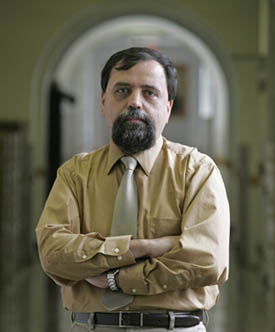

|
October 2010
When we eat candy, chocolate, ice cream, or cereal, the sugar from these foods enters our bodies and is then "burned" with the help of a hormone called insulin to give us energy to move around. In fact, our brains eat mostly sugar, so without sugar we won't be able to even think. This is called "metabolism" - the engine that makes us tick. Kids and adults who have diabetes don't make enough insulin, so they need additional insulin injections to make their bodies work. How much, however, is very important – less insulin or more insulin can cause all kinds of trouble, and can be even deadly. So, doctors need Math to be able to precisely tell how much and when to inject insulin. And when it comes to computers that inject insulin, then the Math becomes even more important and more complicated. "Why do Doctors Need Math to Treat Diabetes?" An interactive session led by Dr. Boris Kovatchev In this talk we'll learn how Math can help treat diabetes, and even make possible an amazing device – the artificial pancreas – which will one day take care of kids and adults with diabetes safely and automatically. |